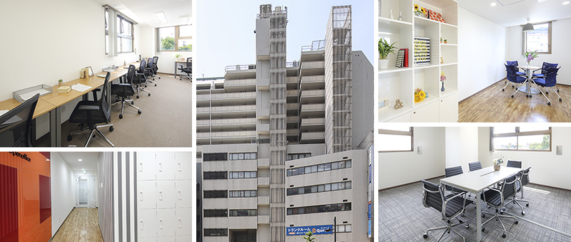
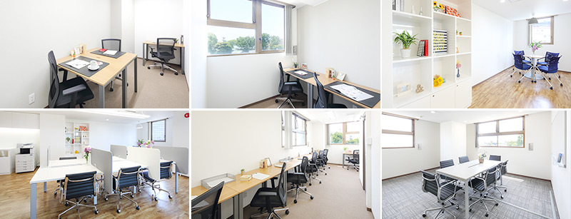
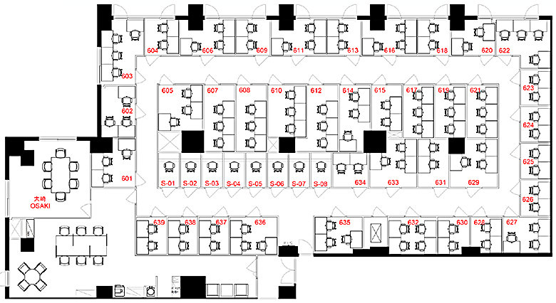

大崎駅西口のレンタルオフィス｜Openoffice：東京・大阪をはじめ全国に50拠点以上
- 【個室レンタルオフィス】オープンオフィス HOME
- オープンオフィス大崎駅西口
【個室レンタルオフィス】オープンオフィス 大崎駅西口
オープンオフィス大崎駅西口は、JR「大崎駅」西口より徒歩3分、山手通りに面したエステージ大崎ビルの6階に位置します。「大崎駅」は山手線、埼京線、りんかい線、湘南新宿ラインが利用でき、都内のビジネスエリアと臨海エリア、横浜エリア、埼玉エリアのビジネスエリアを結ぶ、ハブとなるターミナル駅です。また、バスターミナルも整備され、羽田空港・成田空港だけでなく、全国各地へのアクセスが可能になっております。個室オフィスからシェアオフィス、コワーキングまで多彩なスペースとオフィスプランで様々な事業を支援します。

オープンオフィス大崎駅西口周辺のMap
オープンオフィス大崎駅西口の住所・アクセス
住所:
東京都品川区大崎3-5-2 エステージ大崎ビル6F空港からのアクセス:
羽田空港よりリムジンバスで「大崎」まで約35分羽田空港より京浜急行で「品川駅」経由、JR山手線で「大崎駅」まで約20分
成田空港よりリムジンバスで「大崎駅」まで約75分
電車からのアクセス:
JR山手線・埼京線・湘南新宿ライン、りんかい線「大崎駅」西口より徒歩3分東急池上線「大崎広小路駅」より徒歩3分
JR山手線、都営地下鉄浅草線「五反田駅」より徒歩9分
お車でのアクセス：
山手通り 大崎ー五反田間 「大崎警察署前」交差点至近オープンオフィス大崎駅西口の特長
- 人気ビジネスエリア「大崎」
- 首都圏エリアの交通のハブ
- 支店・営業所としても最適なロケーション
- 大手企業のオフィスが集まる
- ベンチャーの聖地

オープンオフィス大崎駅西口のフロアマップ

※フロア内は禁煙です。
※こちらはイメージ図となりますので、状況が異なる場合は現況を優先させていただきます。
| ◆初回納入金 | 利用料1ヶ月分の保証金 |
|---|---|
| ◆共益費 | 水道光熱費、ビル共益費、ゴミ出し、フロア・トイレの清掃、共有部分の消耗品代を含みます。 |
オープンオフィス大崎駅西口が提供するオフィスサービス
-

高速インターネット
-

カラーレーザーコピー
専用のカードでコピーが出来ます -

ICカードキー
セキュリティを向上させています -

ミーティングルーム
インターネットで予約していただけます -

Wi-Fi完備

ネットワークプリンタ・スキャナ部屋のパソコンで操作できます
オープンオフィス大崎駅西口近隣のスポット
銀行
みずほ銀行 大崎支店
東日本銀行 大崎支店
りそな銀行 五反田支店レストラン
カンテサンス（フレンチ）
リストランテ アンジェロ（イタリアン）
阿亀寿し（寿司）
鉄板焼き 梨の家（ステーキ）
ホテル
ニューオータニイン東京
ダイワロイネットホテル東京大崎
品川プリンスホテル
ザ・プリンス さくらタワー東京
グランドプリンスホテル新高輪
品川プリンスホテルNタワー
ストロングスホテル東京インターコンチネンタル
レジャー
スポーツクラブＮＡＳ大崎
映画館
Ｔ・ジョイPRINCE品川
リージャスグループのご案内
リージャス・グループは、柔軟なワークスペースを提供する世界最大の企業です。そのネットワークは世界120カ国1,100都市、3300拠点に及びます。会員数は250万人で、業界で成功を収める大小様々な企業や起業家の方々にご利用いただいています。
リージャスは、個室タイプのレンタルオフィス、コワーキングスペースなど多彩なオフィスプラン、近年需要が高まるモバイルワークやバーチャルオフィス、障害復旧サービスの提供を通じ、お客様が予算やワークスタイルに合わせて仕事を行うことができる環境を提供いたします。